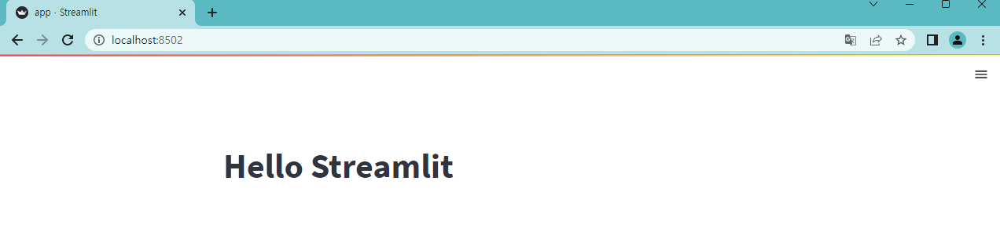
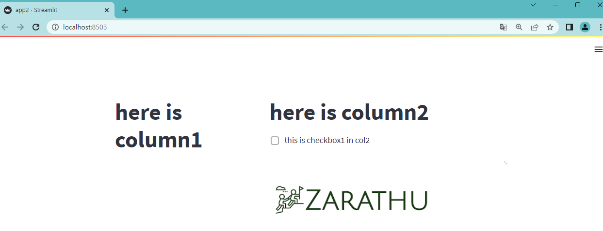
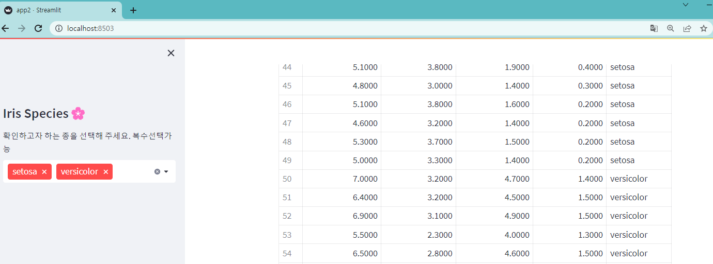
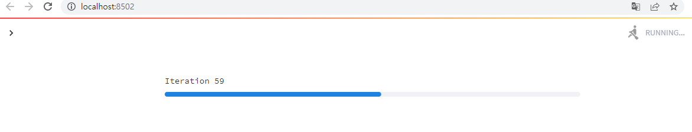
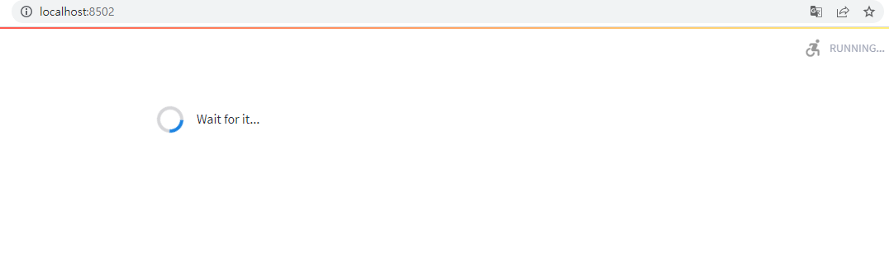
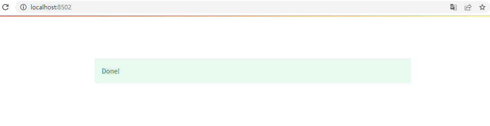
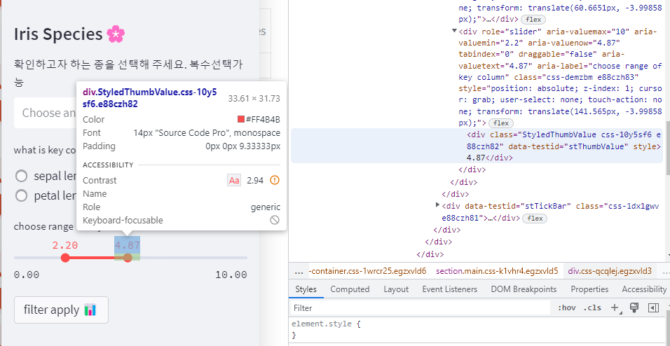

import streamlit as st
st.title('Hello Streamlit')
https://docs.streamlit.io/library/api-reference 를 바탕으로 정리한 글입니다.
2023년 2월 기준) streamlit version 1.17.0 을 기준으로 작성하였습니다.
1 Streamlit 소개
언제 스트림릿을 사용해야할지 스트림릿이 타 프레임워크에 비하여 가질 수 있는 장점을 바탕으로 비교하여 보겠습니다.

빠르게 개발이 가능하다 - 웹개발관련 지식이 부족해도 쉽게 웹페이지를 만들 수 있다.
파이썬에서 분석한 내용을 옮길 필요 없이 바로바로 웹에 띄울 수 있다. + ML/DL 사용가능한 라이브러리들이 많다!
interactive한 웹 개발이 가능하다. Dashboard 만들기 등
단점 : 스트림릿으로 구현한 웹을 바로 product로 사용하기엔 다듬어야 할 부분들이 많고, 디테일한 layout 조정등은 어려움 -> CSS hack을 통해 조정 가능하다!
다른 대안 : pyscript라는 것이 인기를 끌고 있다. 하지만 아직 보완되어야 할 점이 정말 많다.
(html 에서 작동하는 python) https://github.com/pyscript/pyscript
1.1 streamlit과 shiny 예제 비교
- streamlit 활용 사례
- shiny 활용 사례
https://shiny.rstudio.com/gallery/
2 Streamlit 따라 해보기
Streamlit에 어떤 기능이 있는지 따라 쳐보면서 확인해보자.
2.1 스트림릿 설치
파이썬, 가상환경 설치와 관한 내용은 다른 게시물을 참고하시기 바랍니다.
pip install streamlit 파이썬 가상환경에 streamlit패키지를 설치합니다
app.py를 생성한 후 다음 과 같이 수정하여 저장합니다.
이후 터미널에서
streamlit run app.py streamlit run app.py 명렁어를 실행하면, 로컬서버로 페이지가 만들어지게 됩니다.

2.2 스트림릿 기능 소개
더 자세한 내용은 https://docs.streamlit.io/library/api-reference에서 확인하실 수 있습니다.
2.2.1 강조 문구
- title
- header
- subheader
import streamlit as st
st.title('this is title')
st.header('this is header')
st.subheader('this is subheader')
제목과 헤더,서브헤더를 구현할 수 있다.
- etc
추가적으로 Markdown 문법을 st.markdown으로, caption, Latex Code block을 활용가능합니다
2.2.2 layout 짜기
페이지의 공간을 레이아웃을 통해 웹페이지를 분할할 수 있다.
- column
import streamlit as st
col1,col2 = st.columns([2,3])
# 공간을 2:3 으로 분할하여 col1과 col2라는 이름을 가진 컬럼을 생성합니다.
with col1 :
# column 1 에 담을 내용
st.title('here is column1')
with col2 :
# column 2 에 담을 내용
st.title('here is column2')
st.checkbox('this is checkbox1 in col2 ')
# with 구문 말고 다르게 사용 가능
col1.subheader(' i am column1 subheader !! ')
col2.checkbox('this is checkbox2 in col2 ')
#=>위에 with col2: 안의 내용과 같은 기능을합니다결과물

- tab
import streamlit as st
# 탭 생성 : 첫번째 탭의 이름은 Tab A 로, Tab B로 표시합니다.
tab1, tab2= st.tabs(['Tab A' , 'Tab B'])
with tab1:
#tab A 를 누르면 표시될 내용
st.write('hello')
with tab2:
#tab B를 누르면 표시될 내용
st.write('hi')
다음을 실행하면 tab A 를 눌렀을 경우 hello, tab B를 눌렀을 경우 hi가 나오게 됩니다.
탭의 특징으로는, 탭을 클릭과 동시에 데이터가 만들어지는 것이 아니라,탭에 표시될 데이터가 이미 만들어져 았는 것이 특징입니다. 장점이 될 수도 있고, 단점이 될 수도 있습니다.


- sidebar
import streamlit as st
#st.sidebar는
st.sidebar.title('this is sidebar')
st.sidebar.checkbox('체크박스에 표시될 문구')
# 사이드바에 체크박스, 버튼등 추가할 수 있습니다! 

- etc
추가적으로 Expander, Container ,Empty가 있습니다
2.2.3 이미지 불러오기
import streamlit as st
from PIL import Image
#PIL 패키지에 이미지 모듈을 통해 이미지 열기
# Image.open('이미지 경로')
zarathu_img = Image.open('zarathu.png')
col1,col2 = st.columns([2,3])
with col1 :
# column 1 에 담을 내용
st.title('here is column1')
with col2 :
# column 2 에 담을 내용
st.title('here is column2')
st.checkbox('this is checkbox1 in col2 ')
# 컬럼2에 불러온 사진 표시하기
col2.image(zarathu_img)
2.3 웹사용자로부터 input 받기
이제 UI적인 부분을 전반적으로 살펴봤기 때문에, 사용자로 하여금 input을 받아 interactive하게 데이터를 보여주는 페이지를 만들어보겠습니다
데이터는 사이킷런의 아이리스 데이터를 가져와 사용하도록 하겠습니다.
import numpy as np
import pandas as pd
from sklearn.datasets import load_iris
import matplotlib.pyplot as plt
import streamlit as st
iris_dataset = load_iris()
df= pd.DataFrame(data=iris_dataset.data,columns= iris_dataset.feature_names)
df.columns= [ col_name.split(' (cm)')[0] for col_name in df.columns] # 컬럼명을 뒤에 cm 제거하였습니다
df['species']= iris_dataset.target
species_dict = {0 :'setosa', 1 :'versicolor', 2 :'virginica'}
def mapp_species(x):
return species_dict[x]
df['species'] = df['species'].apply(mapp_species)
print(df) sepal length sepal width petal length petal width species
0 5.1 3.5 1.4 0.2 setosa
1 4.9 3.0 1.4 0.2 setosa
2 4.7 3.2 1.3 0.2 setosa
3 4.6 3.1 1.5 0.2 setosa
4 5.0 3.6 1.4 0.2 setosa
.. ... ... ... ... ...
145 6.7 3.0 5.2 2.3 virginica
146 6.3 2.5 5.0 1.9 virginica
147 6.5 3.0 5.2 2.0 virginica
148 6.2 3.4 5.4 2.3 virginica
149 5.9 3.0 5.1 1.8 virginica
[150 rows x 5 columns]streamlit 에서 데이터 프레임을 보여주는 방식은 table과 dataframe 두가지를 사용할 수 있습니다.
dataframe의 head함수를 이용하여 첫 5행의 데이터에 대해 table과 dataframe으로 출력한 경우입니다.
st.subheader('this is table')
st.table(df.head())
st.subheader('this is data frame')
st.dataframe(df.head())
이제 버튼을 동작시키는 방법을 배워보도록 하겠습니다.
1. Select Box
# 사이드바에 select box를 활용하여 종을 선택한 다음 그에 해당하는 행만 추출하여 데이터프레임을 만들고자합니다.
st.sidebar.title('Iris Species🌸')
# select_species 변수에 사용자가 선택한 값이 지정됩니다
select_species = st.sidebar.selectbox(
'확인하고 싶은 종을 선택하세요',
['setosa','versicolor','virginica']
)
# 원래 dataframe으로 부터 꽃의 종류가 선택한 종류들만 필터링 되어서 나오게 일시적인 dataframe을 생성합니다
tmp_df = df[df['species']== select_species]
# 선택한 종의 맨 처음 5행을 보여줍니다
st.table(tmp_df.head())
사용자가 sidebar에서 종을 바꿀 때마다 자동으로 해당하는 종의 테이블 정보가 불러와지게 됩니다.

- multi select
# 여러개 선택할 수 있을 때는 multiselect를 이용하실 수 있습니다
# return : list
select_multi_species = st.sidebar.multiselect(
'확인하고자 하는 종을 선택해 주세요. 복수선택가능',
['setosa','versicolor','virginica']
)
# 원래 dataframe으로 부터 꽃의 종류가 선택한 종류들만 필터링 되어서 나오게 일시적인 dataframe을 생성합니다
tmp_df = df[df['species'].isin(select_multi_species)]
# 선택한 종들의 결과표를 나타냅니다.
st.table(tmp_df)
- Radio / Slider
# 라디오에 선택한 내용을 radio select변수에 담습니다
radio_select =st.sidebar.radio(
"what is key column?",
['sepal length', 'sepal width', 'petal length','petal width'],
horizontal=True
)
# 선택한 컬럼의 값의 범위를 지정할 수 있는 slider를 만듭니다.
slider_range = st.sidebar.slider(
"choose range of key column",
0.0, #시작 값
10.0, #끝 값
(2.5, 7.5) # 기본값, 앞 뒤로 2개 설정 / 하나만 하는 경우 value=2.5 이런 식으로 설정가능
)
# 필터 적용버튼 생성
start_button = st.sidebar.button(
"filter apply 📊 "#"버튼에 표시될 내용"
)
# button이 눌리는 경우 start_button의 값이 true로 바뀌게 된다.
# 이를 이용해서 if문으로 버튼이 눌렸을 때를 구현
if start_button:
tmp_df = df[df['species'].isin(select_multi_species)]
#slider input으로 받은 값에 해당하는 값을 기준으로 데이터를 필터링합니다.
tmp_df= tmp_df[ (tmp_df[radio_select] >= slider_range[0]) & (tmp_df[radio_select] <= slider_range[1])]
st.table(tmp_df)
# 성공문구 + 풍선이 날리는 특수효과
st.sidebar.success("Filter Applied!")
st.balloons()slider_range : list 형식으로 2개의 값이 저장됩니다. 양쪽 앞뒤로 두개의 값을 저장합니다.
slider_range[0] : 최솟값
slider_range[1] : 최댓값 
petal_width 컬럼값이 0에서 1.38사이인 값들로 정보를 filtering한 결과물이 표시됩니다.
3 시각화
3.1 plotly
python의 시각화로 자주 이용되는 패키지는 matplotlib,seaborn,bokeh,plotly 등이 있습니다.
스트림릿에서는 bokeh, plotly, matplotlib 등의 패키지를 통해 생성한 그림(figure)를 streamlit을 통해 웹에서 표시하는 기능을 제공합니다.
3.1.1 st.plotly_chart
#st.plotly_chart(figure_or_data, use_container_width=False, theme="streamlit", **kwargs)
인자로 줄 수 있는 옵션들에 대해서 하나씩 설명해드리도록 하겠습니다.
- figure_or_data : 첫번째 인자로 plotly로 생성한 그림의 이름이 들어가는 위치입니다.
- use_container_width : 레이아웃으로 지정한 사이즈에 그림이 해상도를 조절해서 들어갈 것인지 (->‘True’)
아니면 원래그림 크기대로 표시될 것인지 (-> ‘False’) 선택하는 옵션입니다. - theme : 스트림릿 웹에 어떻게 표시될지 테마를 설정합니다. 인자로는 “streamlit” 과 None(입력하지 않음)을 선택할 수 있습니다.
import plotly.express as px
df = px.data.gapminder()
fig = px.scatter(
df.query("year==2007"),
x="gdpPercap",
y="lifeExp",
size="pop",
color="continent",
hover_name="country",
log_x=True,
size_max=60,
)
fig.show()
tab1, tab2 = st.tabs(["Streamlit theme (default)", "Plotly native theme"])
with tab1:
# Use the Streamlit theme.
# This is the default. So you can also omit the theme argument.
st.plotly_chart(fig, theme="streamlit", use_container_width=True)
with tab2:
# Use the native Plotly theme.
st.plotly_chart(fig, theme=None, use_container_width=True)3.2 지도표시
import numpy as np
import pandas as pd
#지도 위에 표시될 점 좌표 값을 위도경도에 담습니다 .
base_position = [37.5073423, 127.0572734]
#중심점의 위도, 경도 좌표를 리스트에 담습니다.
# base_position에, 랜덤으로 생성한 값을 더하여 5개의 좌표를 데이터 프레임으로 생성하였고,
# 컬럼명은 위도 :lat 경도 lon으로 지정하였습니다.
map_data = pd.DataFrame(
np.random.randn(5, 1) / [20, 20] + base_position ,
columns=['lat', 'lon'])
# map data 생성 : 위치와 경도
print(map_data) lat lon
0 37.425135 126.975066
1 37.525337 127.075268
2 37.485133 127.035064
3 37.486136 127.036067
4 37.439659 126.989590이어서 이 위도 경도 데이터를 스트림릿 웹 페이지에 지도로 나타내는 과정은 다음과 같습니다.
st.code('st.map(map_data)')
# 웹사이트에 어떤 코드인지 표시해주기
st.subheader('Map of Data ')
# 제목 생성
st.map(map_data)
# 지도 생성 결과물

4 st.session_State / st.cache
https://docs.streamlit.io/library/api-reference/performance/st.cache
4.1 st.session_state 세션 스테이트란?
상태가 자꾸 변하는 것들을 세션스테이트에 관리해두면 바뀌는 값에 따라 내용이 바뀌는 것들을 기록할 수 있다.
** 아주 중요한 역할을 하는 기능입니다. **
4.2 st.session_state 활용

세션스테이트에 key값의 초기값이 없으면, 초기값을 생성하여 놓는 작업을 if문을 통해 진행합니다.
세션스테이트에 사용자가 입력한 인풋에 따라서 dataframe이 재가공 되는데 이 값이 interactive하게 지정되게 하기 위해 st.session_state값으로 사용합니다.
# 예시코드
# import streamlit as st
# if 'final_dataframe' not in st.session_state:
# # session state 에 final 이라는 값이 없으면,
# st.session_state['final_dataframe']= df
# # 초기 값 설정 : session_state에 final_dataframe키 값에 초기값 데이터를 집어넣습니다 .
# #아래 코드는 df의 테이블 값이 바뀌더라도 interactive하게 연동되서 바뀌지 않습니다
# st.table(df)
# # 아래 코드는 이제 dataframe가 조작될 때 마다 session_state객체 안에 final_dataframe값을 변경하면,
# # 수정 될 때 계속 바뀌어서 보여줍니다.
# st.table(st.session_state.final_dataframe)4.3 cache 란 무엇인가?

캐싱에 관한 간단한 개념은 주문이 들어왔을 때 우리가 만들기 시작하면 코드가 결과물을 만들어내는데 시간이 오래 걸리는 경우 유저가 결과물을 오랜시간 기달려야하는 경우가 발생합니다.
따라서 만들어내는데 오래걸리는 결과물을 미리 만들어두고, 보이지 않는 곳에 캐싱하여 필요할때 찾아 꺼내는 것을 cache기능이라고 간단히 설명하도록 하겠습니다.
4.4 streamlit 에서 cache 기능 사용하기
streamlit에서는 시간이 오래걸리는 작업: 데이터 로드 등을 할때 위에 (st.cache를?) 추가하여 캐싱할 수 있게 할 수 있다.
import streamlit as st
import pandas as pd
file_path = '~~~filepath'
@st.cache
def load_data():
data = pd.read_csv(file_path)
return data큰 데이터를 로드하거나, 실행이 오래걸리는 복잡한 연산을 해야할 때 cache기능을 이용하면 용이하다.
4.5 로딩상태 구현
4.5.1 st.progress
import time
# 방법 1 progress bar
latest_iteration = st.empty()
bar = st.progress(0)
for i in range(100):
# Update the progress bar with each iteration.
latest_iteration.text(f'Iteration {i+1}')
bar.progress(i + 1)
time.sleep(0.05)
# 0.05 초 마다 1씩증가
st.balloons()
# 시간 다 되면 풍선 이펙트 보여주기 코드 수행 소요시간이 긴 경우, progress bar와 streamlit의 spinner를 통해서 로딩페이지를 만들 수 있다!
 
4.5.2 st. spinner 사용
#방법2 st.spinner 사용
import time
with st.spinner('Wait for it...'):
time.sleep(5)
st.success('Done!')  
5 스트림릿의 단점
5.1 근본적 한계
streamlit 에서 제공하는 UI들이 대부분 예쁘지만, 디테일적으로 맘에 들지 않을 수가 있다.

예를 들어 4.87로 표시된 부분의 폰트가 맘에들지 않는다고 하자. 그렇다면 streamlit를 markdown을 통해서 style을 직접 수정해주어야한다.
5.2 극복방안 : CSS hack
이 작업을 streamlit CSS hack이라고 한다

브라우저에 검사기능을 이용하여 css해당하는 부분을 마크다운으로 직접 style tag를 넣어서 수정하면 된다.
아래 유튜브를 통해서 더욱 자세한 내용을 배울 수 있습니다.
6 소개하지 못했지만 중요한 기능
DB를 연결하는 부분 streamlit은 다양한 DBMS 연결을 지원합니다.
제공하는 tutorial을 통해 연결해보세요
https://docs.streamlit.io/knowledge-base/tutorials/databases배포하는 부분
streamlit을 로컬에서 말고 링크를 만들어 배포할 수 있습니다 https://docs.streamlit.io/knowledge-base/tutorials/deploy
7 파이썬 streamlit을 활용한 설문조사 대시보드 제작기
Citation
BibTeX citation:
@online{2023,
author = {},
title = {Python {Streamlit} {패키지를} {이용한} {대시보드} {만들기}},
date = {2023-02-01},
url = {https://blog.zarathu.com/posts/2023-02-01-streamlit},
langid = {en}
}
For attribution, please cite this work as:
“Python Streamlit 패키지를 이용한 대시보드 만들기.” 2023.
February 1, 2023. https://blog.zarathu.com/posts/2023-02-01-streamlit.